OFFLINE source and candidate-crop review. Original supporting fiction; these portraits do not replace national leaders. Eight portraits,16 narrative scenes and two separately composed loading masters. Core scenes are grounded and outcome-neutral; ending slots6/7/8 show trusted, compromised and fractured personal conclusions. No native game, input, DDS or loading-scaling acceptance is claimed.
Portrait fits | Scene fit/crop sheet. The loading service returned1932x814 panoramas despite a16:9 request. Selected originals remain byte-for-byte unchanged. Separate conservative16:9 and exact3440:1440 center-cover previews expose the actual crop; runtime packaging/scaling remains the integration owner's gate.
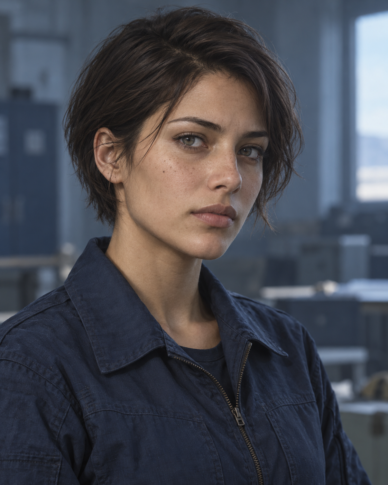
Individually visually inspected: distinctive short dark-brown hair, olive complexion, grey-green eyes, high cheekbones and freckles; plain navy clothing, natural cool service-room light, no insignia/text/watermark/yellow overlay or permanent injury. Entire head is visible; preserve full source height because upper hair margin is tight.
Packaging: Full-height contain at156x210; preserve complete head/hair. Never attach these original fictional story portraits to national government leaders. Rhea has a tight upper hair margin; never trim additional source height.
Individually inspected original master: warm dark-brown skin, short tight curls, clean-shaven broad face, dark eyes and a restrained uneven warmth. Plain slate flight suit and soft service-room background. Entire head and shoulders retained with good top margin; no readable text, marks, insignia, yellow overlay or injury.
Packaging: Full-height contain at156x210; preserve complete head/hair. Never attach these original fictional story portraits to national government leaders.
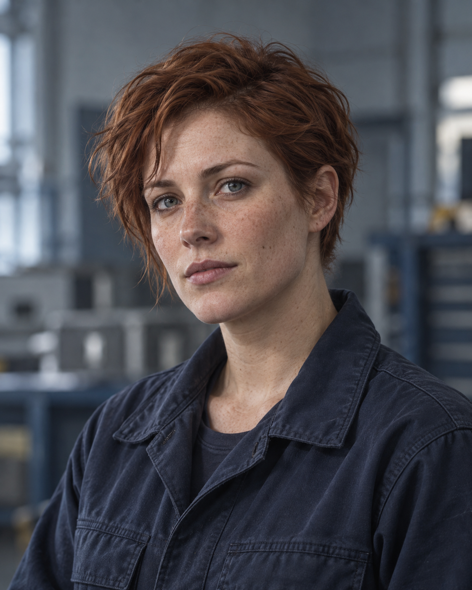
Individually inspected original master: short auburn hair, fair freckled skin, blue-grey eyes and practical reassuring expression, plain navy maintenance clothing. Entire head retained with good top margin. No readable text, insignia, watermark, fixed bandage or injury; soft natural workshop lighting.
Packaging: Full-height contain at156x210; preserve complete head/hair. Never attach these original fictional story portraits to national government leaders.
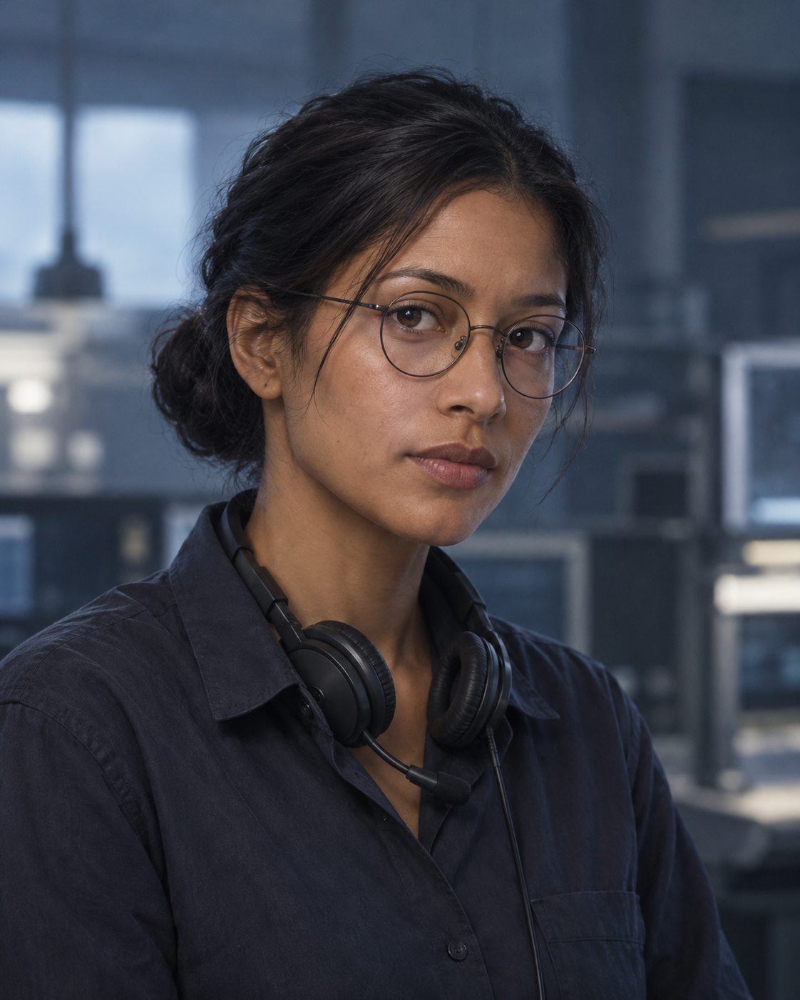
Individually inspected original master: medium-brown skin, black low bun, brown eyes, thin round glasses, plain dark shirt and unmarked headset at neck. Quiet concentration and natural eyes. Entire head, bun and shoulders retained; no readable text, emblem, yellow artifact or permanent injury.
Packaging: Full-height contain at156x210; preserve complete head/hair. Never attach these original fictional story portraits to national government leaders.
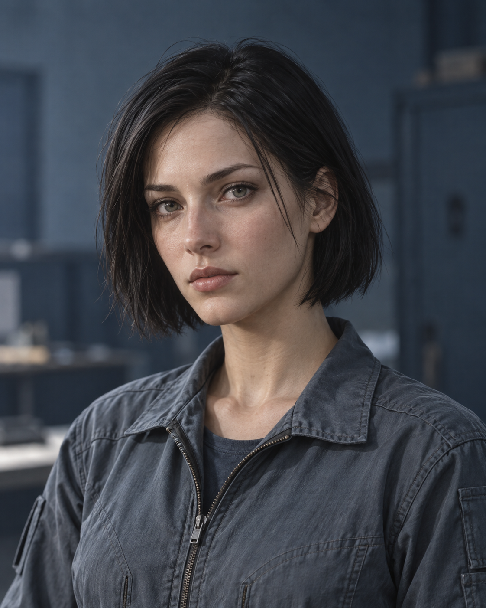
Individually inspected original master: light skin, straight jaw-length black hair, grey eyes and narrow face with an alert restrained gaze. Plain faded blue-grey flight clothing, entire head and shoulders inside frame with good top margin. No readable markings, insignia, yellow overlay, injury or established character likeness intended.
Packaging: Full-height contain at156x210; preserve complete head/hair. Never attach these original fictional story portraits to national government leaders.
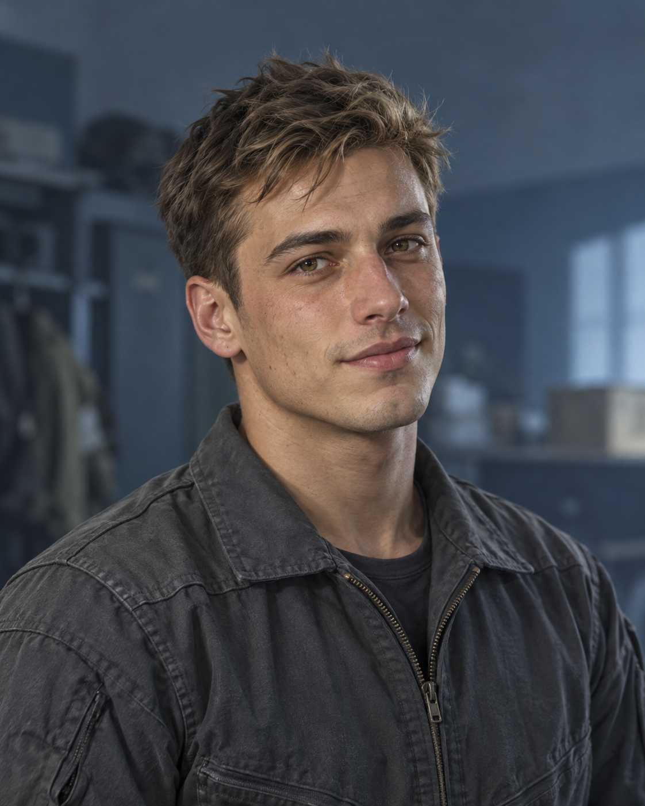
Individually inspected original master: short dark-blond hair, hazel eyes, light olive skin and lean face with an uneven slight smile. Plain charcoal practical clothing, whole head and shoulders and clear top background margin. No text, insignia, watermark, permanent injury or yellow graphic artifact.
Packaging: Full-height contain at156x210; preserve complete head/hair. Never attach these original fictional story portraits to national government leaders.
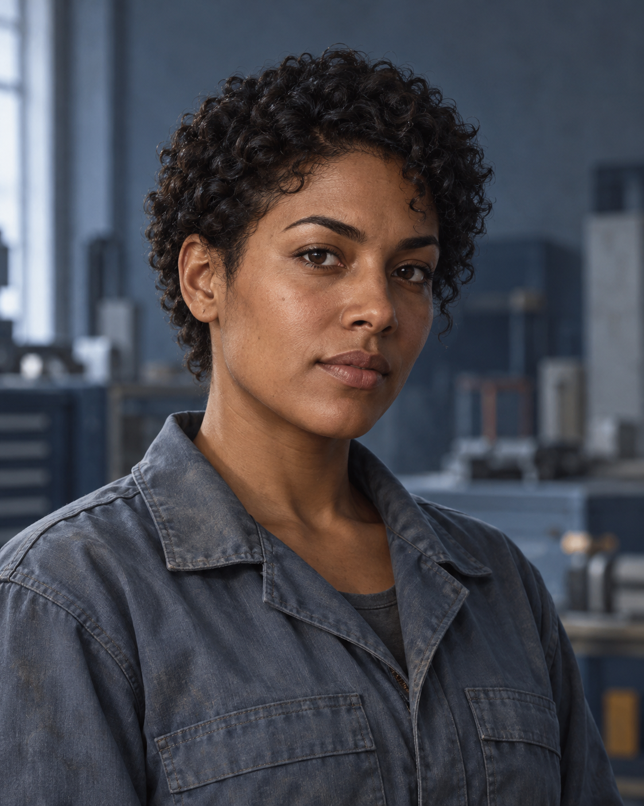
Individually inspected original master: brown skin, short tightly curled black hair, dark eyes and strong brows, patient direct expression. Plain faded grey-blue work coveralls, whole head and shoulders and sufficient hair margin. No weapon, fixed injury, text, rank or yellow overlay.
Packaging: Full-height contain at156x210; preserve complete head/hair. Never attach these original fictional story portraits to national government leaders.
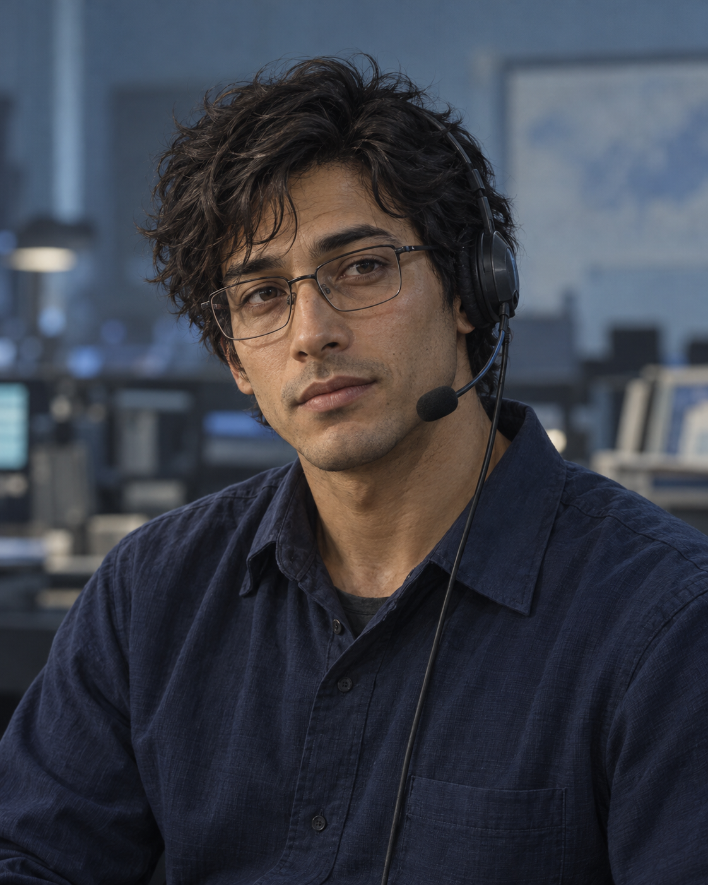
Individually inspected original master: warm light-brown skin, dark wavy hair, brown eyes behind thin square glasses, plain navy shirt and unmarked headset. Tired curious expression, entire head and shoulders with background margin. No text, emblem, yellow graphic artifact or fixed injury.
Packaging: Full-height contain at156x210; preserve complete head/hair. Never attach these original fictional story portraits to national government leaders.
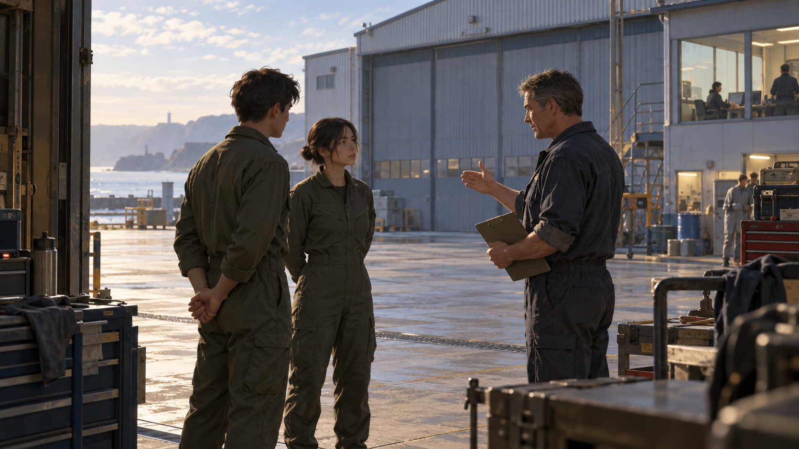
Individually inspected original master: a grounded coastal workshop introduction, two anonymous listeners and a maintenance colleague, closed hangar and modest control-room windows. Natural dawn light, no airborne aircraft, weapon, battle or national result. No readable labels or watermark. Small incidental warm floor reflections are scenery, not a yellow overlay. Central card crop retains the three principal people.
Packaging: Full-source contain at200x160 retains the complete narrative action. Center-cover previews are conservative review alternatives, not universal approved replacements.
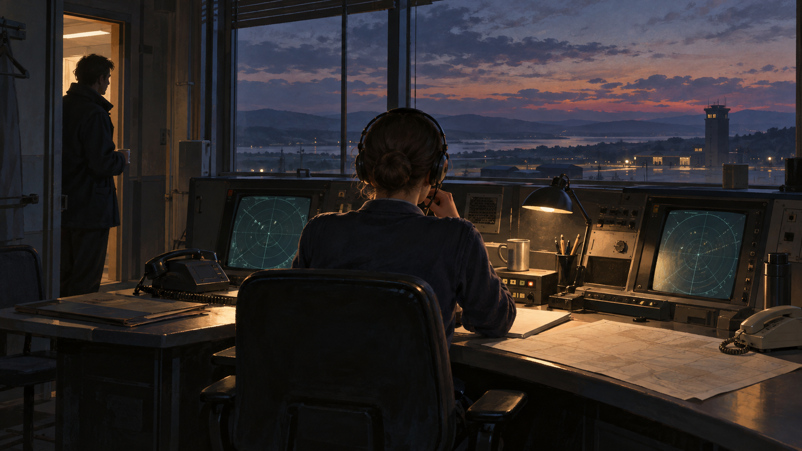
Individually inspected original master: back-facing controller in a grounded dusk control room, two telephones, restrained radar-like rings and a waiting doorway observer. No readable text, identifiable enemy, launch or national outcome. Soft warm lamp light is natural. Central card crop retains the controller, receiving desk and communications instruments; peripheral doorway observer is contextual.
Packaging: Full-source contain at200x160 retains the complete narrative action. Center-cover previews are conservative review alternatives, not universal approved replacements.
Individually inspected revised original master: two anonymous technicians inspect an opened small mechanical actuator at an ordinary aviation workbench, with tools, plain cloth and empty transport case. Natural side light, no readable writing, incident, injury, national result or graphic watermark. Central card crop retains component and both workers' task. The failed first request delivered no image; selected source is the explicitly recorded benign revision.
Packaging: Full-source contain at200x160 retains the complete narrative action. Center-cover previews are conservative review alternatives, not universal approved replacements.
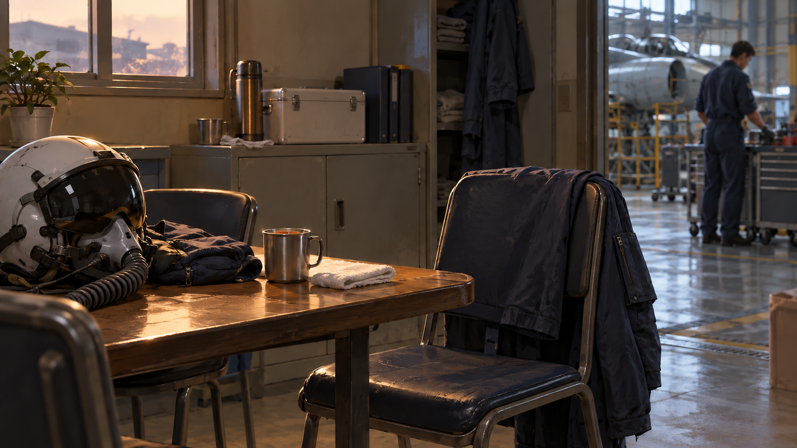
Individually inspected selected built-in edit: unintended cross emblem is removed and first-aid box is now plain; background machine's yellow paint is neutral grey. Empty chair, plain helmet, folded clothing, tea and doorway colleague are retained. No identifiable injury, death implication, readable text, mark or watermark. Original pre-edit output is retained outside selected sources with its hash.
Packaging: Full-source contain at200x160 retains the complete narrative action. Center-cover previews are conservative review alternatives, not universal approved replacements.
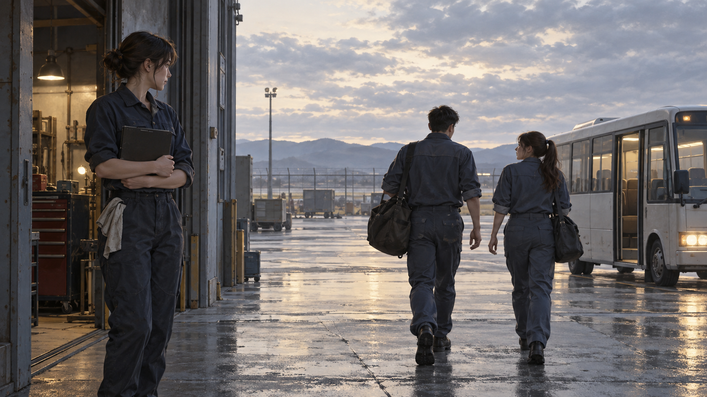
Individually inspected original master: two anonymous service personnel walk toward an ordinary civilian bus, third holds a closed plain folder at the workshop doorway. Grounded overcast shift change, no surrender, national outcome, logo, text or watermark. Central crop retains both walkers and contextual workshop/bus; leftmost colleague is peripheral.
Packaging: Full-source contain at200x160 retains the complete narrative action. Center-cover previews are conservative review alternatives, not universal approved replacements.
Individually inspected original master: four cast-linked adult silhouettes from behind around a table, blank notebook and four cups, close chairs and natural late light. Dark-brown short hair/dark-blue clothing, tight curls/slate clothes, auburn hair/navy maintenance and low black bun/dark shirt distinguish the four. No identifiable young faces, salute, victory, state endorsement or readable writing; personal trust only.
Packaging: Full-source contain at200x160 retains the complete narrative action. Center-cover previews are conservative review alternatives, not universal approved replacements. Required full fit: center-cover can discard an outer cast member or a separate departure and change the meaning.
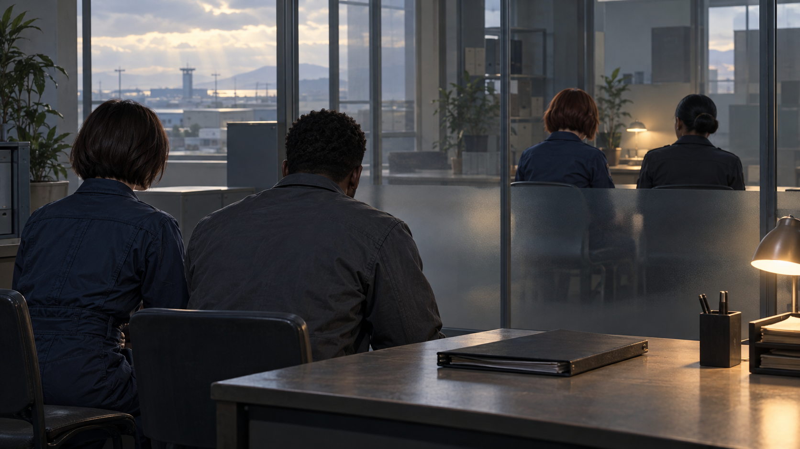
Individually inspected original master: two separated pairs of cast-linked adult backs, practical navy/slate clothing and dark/auburn/low-bun/tight-curled hair, frosted glass and closed plain folder. No identifiable young faces, accusation, spy spectacle, imprisonment, readable writing or state outcome. Central crop preserves the partition and both separated pairs as a compromised personal conclusion.
Packaging: Full-source contain at200x160 retains the complete narrative action. Center-cover previews are conservative review alternatives, not universal approved replacements.
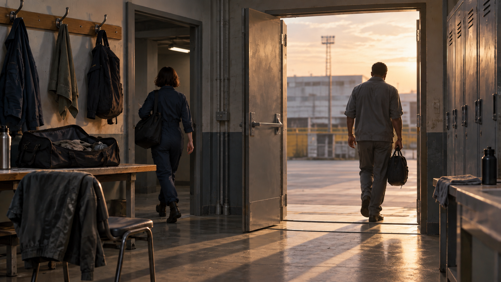
Individually inspected selected built-in edit: just two back-facing adult colleagues leave by visibly different routes, left interior corridor and right exterior door. Open travel bag, four hooks and jacket on chair remain. This is separate transfers and unfinished conversation, with no death, arrest, occupation or national defeat. Prior grouped-departure output retained outside selected sources.
Packaging: Full-source contain at200x160 retains the complete narrative action. Center-cover previews are conservative review alternatives, not universal approved replacements.
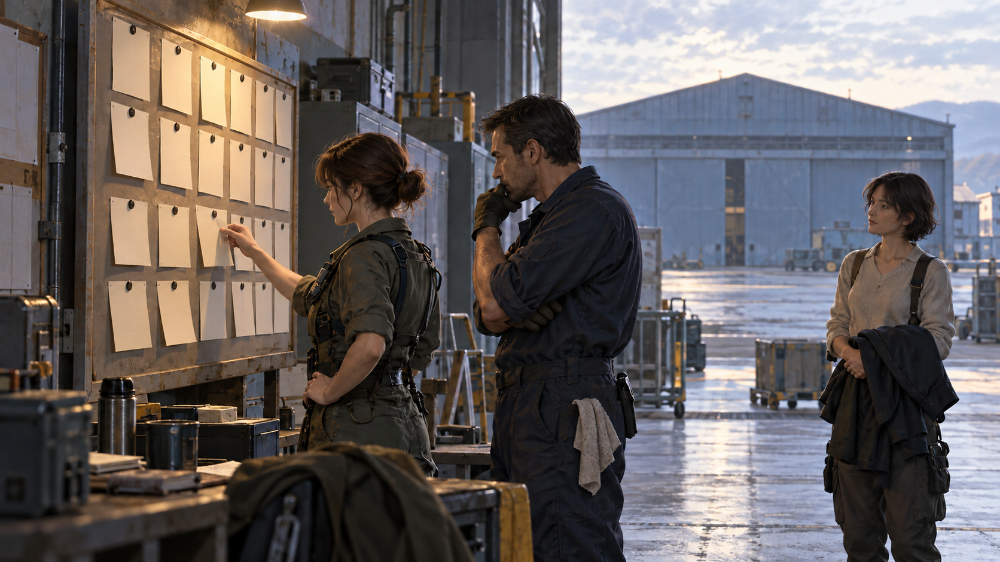
Individually inspected selected built-in edit: notice-board papers are now plain off-white without faint pseudo-writing, with folds/pins/shadows retained. Three anonymous people, receiving arrangement and closed workshop hangar remain in natural pale light. No readable labels, official crest, aircraft count, national result or watermark. Prior original retained outside selected sources.
Packaging: Full-source contain at200x160 retains the complete narrative action. Center-cover previews are conservative review alternatives, not universal approved replacements.
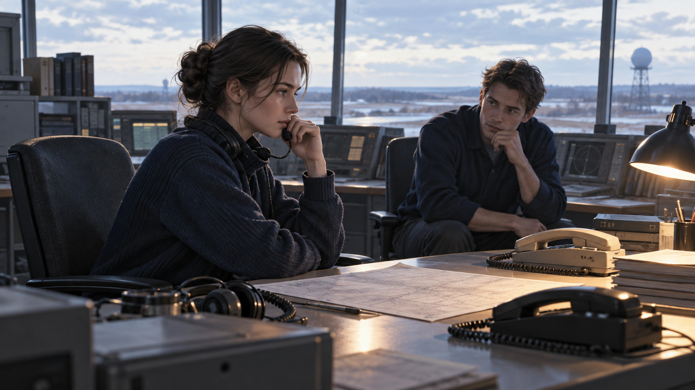
Individually inspected original master: two anonymous colleagues listening in a grounded operations room, separate plain telephones, headset and route-sheet linework without readable place names. Cold daylight and natural warm lamp light. No launch, specific enemy, national outcome, logo or watermark; central crop retains both listeners and the communications task.
Packaging: Full-source contain at200x160 retains the complete narrative action. Center-cover previews are conservative review alternatives, not universal approved replacements.
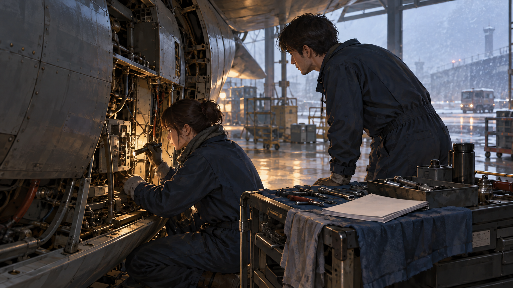
Individually inspected selected built-in edit: unintended technical label writing removed from the machine's grey panel. Two anonymous technicians examine conventional open machinery beside a trolley, tools and blank inspection sheet, with illustrative snow outside. No named airframe, incident, weapon, production grant, national result or watermark. Original pre-edit output retained separately.
Packaging: Full-source contain at200x160 retains the complete narrative action. Center-cover previews are conservative review alternatives, not universal approved replacements.
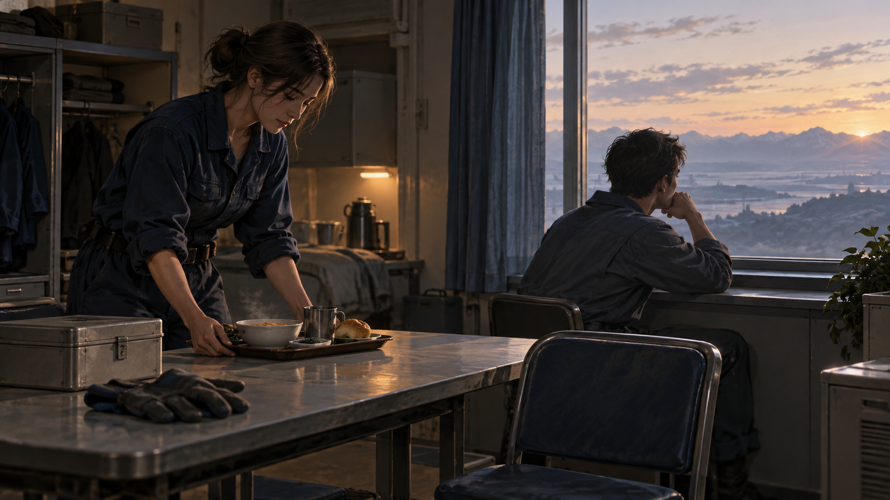
Individually inspected original master: plain closed grey supplies box, gloves, unused chair, one anonymous colleague by the window and another setting down an ordinary meal. No fixed injury, medical emblem, death implication, readable writing or national result. Natural light and inhabited rest-room detail support fatigue and care without implying incapacitation.
Packaging: Full-source contain at200x160 retains the complete narrative action. Center-cover previews are conservative review alternatives, not universal approved replacements.
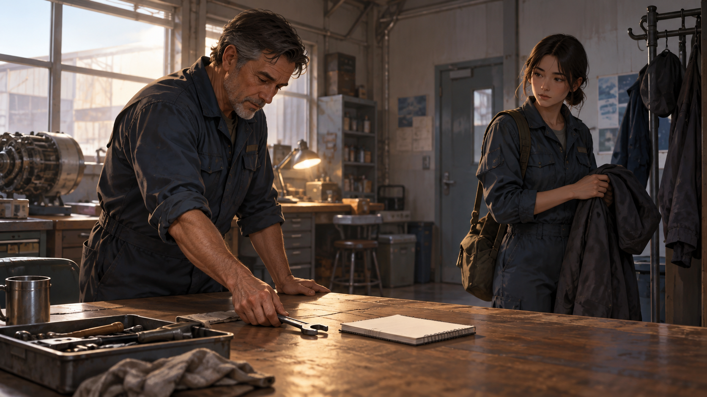
Individually inspected original master: anonymous experienced older technician places an ordinary tool by a blank notebook as a younger adult waits beside a coat rack. No medal, banner, text, logo, result or state endorsement. Central crop retains the passing-on of useful practice; machinery is conventional contextual scenery.
Packaging: Full-source contain at200x160 retains the complete narrative action. Center-cover previews are conservative review alternatives, not universal approved replacements.
Individually inspected selected built-in edit: all four experienced cast-linked backs are retained, and an anonymous younger adult learner is now visible across the central bench watching the same ordinary procedure. Distinct black bob, dark-blond, tight black curls and dark waves/clothing remain. No identifiable young core-cast faces, insignia, text, state endorsement, factory grant or victory; personal trust is expressed through teaching. Original four-person output retained outside selected sources.
Packaging: Full-source contain at200x160 retains the complete narrative action. Center-cover previews are conservative review alternatives, not universal approved replacements.
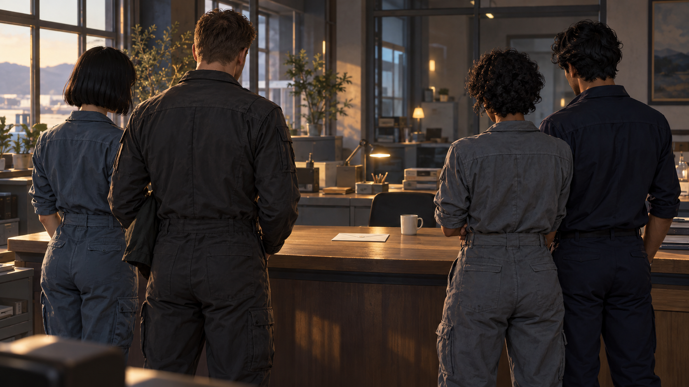
Individually inspected original master: two distinct pairs of cast-linked back-facing adults at a functional receiving desk, a sealed plain envelope and an untouched cup. Jaw-length black hair/faded blue-grey, short dark-blond/charcoal, tight curls/grey-blue and dark waves/navy distinguish the four. No identifiable young faces, treaty, coup, official endorsement, prison setting or readable marks; the personal cost is the careful separation and silence.
Packaging: Full-source contain at200x160 retains the complete narrative action. Center-cover previews are conservative review alternatives, not universal approved replacements.
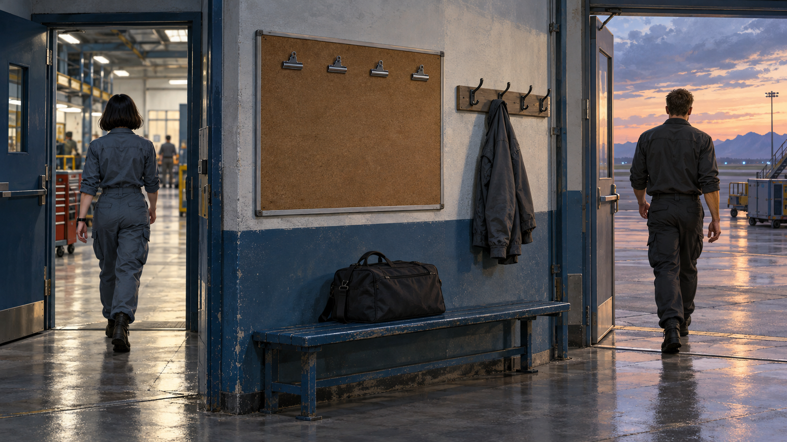
Individually inspected original master: only two back-facing age-neutral colleagues leave by different routes around the now-empty clipped board, four hooks, jacket and travel bag. Work continues in the anonymous workshop beyond. No casualty list, writing, arrest, death, occupation or required defeat. Full-source fit retains both separate departures and the empty board. Center-cover loses peripheral narrative detail and must not replace the full-fit card.
Packaging: Full-source contain at200x160 retains the complete narrative action. Center-cover previews are conservative review alternatives, not universal approved replacements. Required full fit: center-cover can discard an outer cast member or a separate departure and change the meaning.
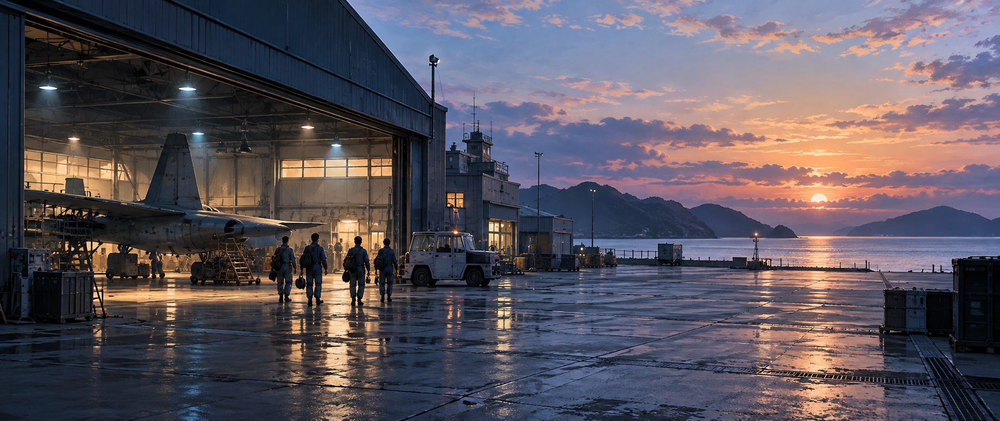
Individually inspected independent original panoramic loading master: anonymous coastal service station at dawn, grounded conventional aircraft partly under hangar cover, small workers, service vehicle, calm water and natural sunrise. No airborne battle, strategic weapon, flag, text, named city, forced outcome or yellow graphic overlay. The service generated a1932x814 wide master; preserve it and derive16:9/3440:1440 crops separately. Main crew, complete vertical tail and service-vehicle silhouettes remain inside both center-crop formats. Natural warm light is part of the scenery.
Packaging: Independent1932x814 full-bleed panoramic original. Use the reviewed center-cover treatment for1920x1080 and3440:1440; do not use a generic contain path with large navy bars. Native loading scaling remains untested.
Individually inspected independent original panoramic loading master: anonymous winter maintenance station, warm open workshop, partly framed conventional machinery, small workers, service gear and quiet road receiving approach, closed hangar and illustrative snow. No readable labels, flags, logo, battle, giant weapon or national-recovery assertion. The service generated a1932x814 wide master; preserve it and derive16:9/3440:1440 crops separately. Main workers and receiving approach remain visible in both conservative crops; natural workshop warmth is not a yellow overlay.
Packaging: Independent1932x814 full-bleed panoramic original. Use the reviewed center-cover treatment for1920x1080 and3440:1440; do not use a generic contain path with large navy bars. Native loading scaling remains untested.